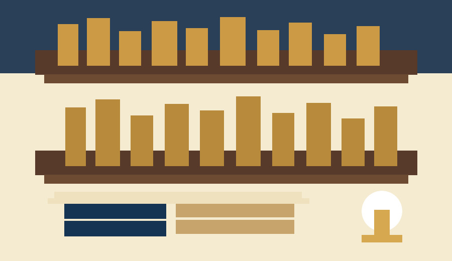
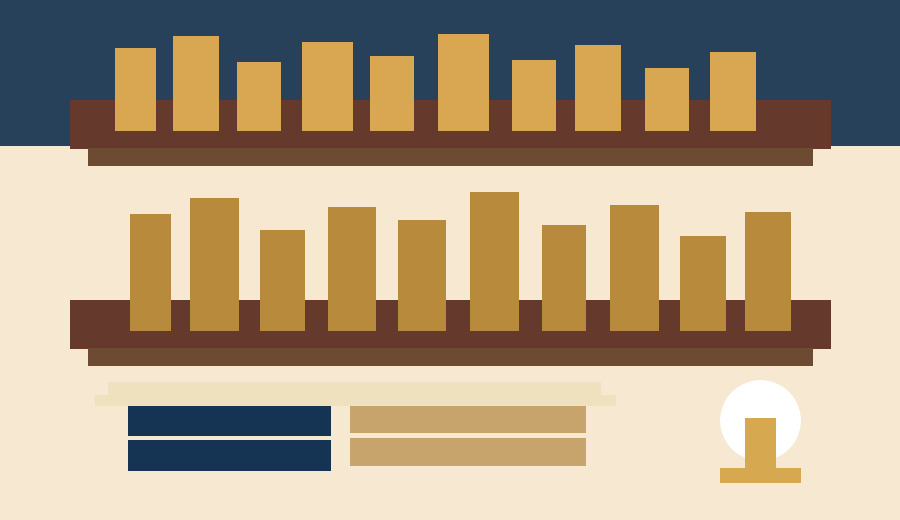

Manual de Usuario para Sistema No Relacional
Biblioteca Juvenil
Sistema Web para Biblioteca Escolar
Alumno: Nombre del alumno
Modulo: Desarrollo de aplicaciones web
Semestre: Sexto semestre
Materia: Base de datos no relacionales
Fecha: 10 de junio de 2026
Biblioteca Juvenil es un sistema web basico para administrar una biblioteca escolar pequena. El sistema permite registrar autores, libros, usuarios y prestamos. Tambien permite consultar informacion en tablas, buscar registros, editar datos, actualizar documentos, eliminar registros e imprimir listas.
El proposito principal es facilitar el control de los libros disponibles, los autores registrados, los alumnos que usan la biblioteca y los prestamos activos o entregados.
El proyecto utiliza tecnologias sencillas y adecuadas para una aplicacion escolar de base de datos no relacional.
| Tecnologia | Uso dentro del sistema |
|---|---|
| HTML | Estructura de las paginas del sistema. |
| CSS | Estilos visuales personalizados. |
| Bootstrap local | Diseno de botones, tablas, tarjetas y formularios. |
| Bootstrap Icons local | Iconos en la barra de navegacion y botones. |
| JavaScript basico | Peticiones al servidor, busquedas, impresion y mensajes. |
| SweetAlert2 local | Alertas de exito, error y confirmacion. |
| Node.js | Servidor principal del sistema. |
| Express | Rutas con app.get y app.post. |
| MongoDB | Base de datos no relacional. |
Para ejecutar el sistema se debe tener MongoDB activo. Despues se abre una terminal en la carpeta del proyecto y se ejecuta el servidor Node.
Cuando el servidor este encendido, se abre el navegador en la direccion:
El archivo principal es server.js. En ese archivo estan las rutas app.get para mostrar paginas y consultar datos, y las rutas app.post para guardar, actualizar y eliminar informacion.
| Elemento | Configuracion |
|---|---|
| Servidor | Node.js ejecutando server.js en el puerto 3000. |
| Base de datos | MongoDB en mongodb://127.0.0.1:27017. |
| Nombre de la base | biblioteca_juvenil. |
| Paginas | Carpeta pages. |
| Archivos publicos | Carpeta public. |
| Estilos | public/css/estilos.css. |
| JavaScript | public/js/script.js. |
| Imagenes | public/img. |
Como el proyecto usa MongoDB, el diagrama representa colecciones y referencias por ObjectId. No se usan llaves foraneas SQL, sino referencias guardadas en campos.
| autores | libros | prestamos | usuarios |
|---|---|---|---|
| _id nombre nacionalidad correo |
_id titulo genero anio autorId |
_id libroId usuarioId fechaPrestamo fechaEntrega estado |
_id nombre telefono correo grupo |
| Un autor puede estar relacionado con muchos libros. | Un libro pertenece a un autor y puede aparecer en prestamos. | Un prestamo relaciona un libro con un usuario. | Un usuario puede tener varios prestamos. |
La base de datos se llama biblioteca_juvenil. Contiene cuatro colecciones principales.
| Coleccion | Campos | Descripcion |
|---|---|---|
| autores | _id, nombre, nacionalidad, correo | Guarda la informacion basica de los autores. |
| libros | _id, titulo, genero, anio, autorId | Guarda los libros y la referencia del autor. |
| usuarios | _id, nombre, telefono, correo, grupo | Guarda los alumnos o usuarios de biblioteca. |
| prestamos | _id, libroId, usuarioId, fechaPrestamo, fechaEntrega, estado | Guarda los prestamos de libros. |
MongoDB crea un campo _id para cada documento. El sistema usa ObjectId para relacionar documentos entre colecciones.
En la lista de prestamos se usa una consulta con aggregate(). Esta consulta incluye $lookup para unir prestamos con libros y usuarios. Despues usa $unwind para convertir los arreglos relacionados en objetos sencillos. Finalmente usa $project para mostrar solo campos importantes.
El sistema usa restricciones sencillas porque es un proyecto escolar con MongoDB. Para registrar un libro se debe seleccionar un autor existente. Para registrar un prestamo se debe seleccionar un libro existente y un usuario existente.
MongoDB no maneja llaves foraneas como SQL, por eso no se aplica cascade, set null ni restrict automatico desde la base de datos. La integridad se maneja desde el formulario, usando listas desplegables que cargan documentos existentes.
Si se elimina un documento relacionado, el sistema no borra automaticamente los demas documentos. Esta decision mantiene el codigo sencillo y facil de entender.
El diseno usa colores relacionados con una biblioteca: azul oscuro, blanco, beige, cafe claro y detalles dorados. La barra de navegacion se mantiene igual en todas las paginas.
Las tarjetas se usan para mostrar accesos rapidos. Los formularios estan centrados, las tablas tienen encabezados claros y los botones incluyen iconos para que el usuario identifique cada accion facilmente.

El usuario llena un formulario y presiona Guardar. El navegador manda los datos al servidor con JavaScript. El servidor recibe los datos en una ruta app.post y usa insertOne para guardar en MongoDB.
El usuario entra a una lista. La pagina pide datos a una ruta app.get. El servidor consulta MongoDB con find o aggregate y regresa los datos.
El usuario presiona el boton de lapiz. El sistema abre el formulario con el id del registro, carga la informacion y permite modificarla. Al guardar, el servidor usa updateOne.
El usuario presiona el boton de basura. SweetAlert2 pide confirmacion. Si el usuario acepta, el servidor usa deleteOne para eliminar el documento.
Las siguientes imagenes se incluyen como capturas simuladas para mostrar el estilo general del proyecto.

| Elemento | Cumple |
|---|---|
| Incluye portada con nombre del proyecto, alumno, modulo, semestre y fecha. | Si |
| Incluye indice o estructura del documento. | Si |
| Describe el proposito del sistema. | Si |
| Menciona las tecnologias utilizadas: Node y MongoDB. | Si |
| Explica como ejecutar el software o programa. | Si |
| Incluye diagrama entidad-relacion adaptado a colecciones NoSQL. | Si |
| Indica configuracion necesaria de base de datos, servidor y archivos. | Si |
| Explica el funcionamiento de los estilos. | Si |
| Describe el uso del sistema y CRUD paso a paso. | Si |
| Incluye capturas de pantalla claras o simuladas. | Si |
| Explica la base de datos y sus colecciones. | Si |
| Describe relaciones NoSQL con $lookup y aggregate. | Si |
| Explica restricciones de integridad segun el proyecto. | Si |
| Menciona validaciones y manejo de errores. | Si |
| Redaccion clara y sin errores ortograficos importantes. | Si |
| Documento ordenado y facil de entender. | Si |